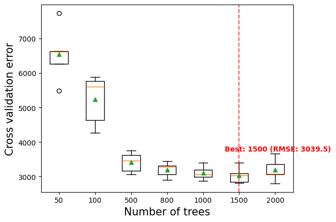
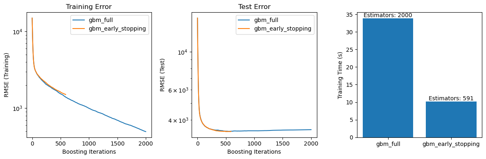
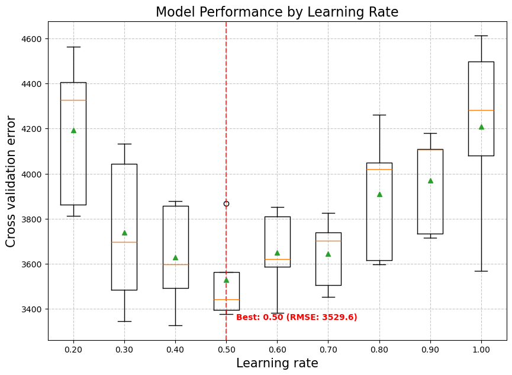
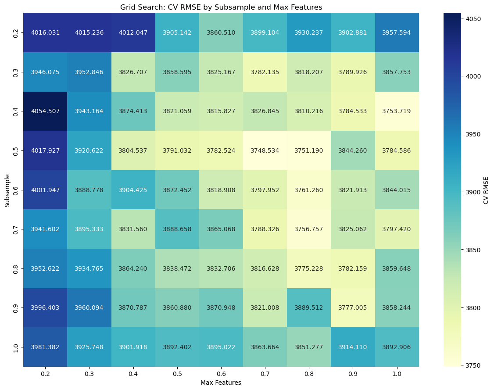
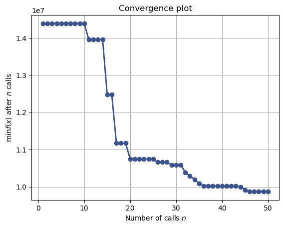

import pandas as pd
import numpy as np
import seaborn as sns
import matplotlib.pyplot as plt
from sklearn.metrics import mean_squared_error
from sklearn.model_selection import cross_val_score,train_test_split, KFold, cross_val_predict
from sklearn.metrics import root_mean_squared_error, mean_squared_error,r2_score,roc_curve,auc,precision_recall_curve, accuracy_score, \
recall_score, precision_score, confusion_matrix
from sklearn.tree import DecisionTreeRegressor,DecisionTreeClassifier
from sklearn.model_selection import GridSearchCV, ParameterGrid, StratifiedKFold
from sklearn.ensemble import GradientBoostingRegressor,GradientBoostingClassifier, BaggingRegressor,BaggingClassifier,RandomForestRegressor,RandomForestClassifier,AdaBoostRegressor,AdaBoostClassifier
from sklearn.preprocessing import OneHotEncoder, FunctionTransformer
import itertools as it
import time as time
from skopt import BayesSearchCV
from skopt.space import Real, Categorical, Integer
from skopt.plots import plot_objective, plot_histogram, plot_convergence
import warnings
from IPython import display9 Gradient Boosting
Check the gradient boosting algorithm in section 10.10.2 of the book, Elements of Statistical Learning before using these notes.
Note that in this course, lecture notes are not sufficient, you must read the book for better understanding. Lecture notes are just implementing the concepts of the book on a dataset, but not explaining the concepts elaborately.
9.1 Core Hyperparameters in Gradient Boosting
Number of Trees (
n_estimators)- Use early stopping (via
n_iter_no_changeandvalidation_fractionin scikit-learn) to avoid overfitting.
- Start with a large value (e.g., 500–1000) and let early stopping prune unnecessary trees.
- Use early stopping (via
Early Stopping
- Prevents overfitting by halting training once the validation performance stops improving.
- Controlled using:
n_iter_no_change: Number of rounds with no improvement before stopping (e.g., 10).validation_fraction: Fraction of training data reserved as internal validation set (e.g., 0.1).tol: Minimum improvement to be considered significant (e.g.,1e-4).
- Set a large
n_estimators, and let early stopping determine the optimal number of boosting iterations.
- Prevents overfitting by halting training once the validation performance stops improving.
Learning Rate (
learning_rate)- Shrinks the contribution of each tree to improve generalization.
- Typical range: 0.01–0.2 (lower values require more trees).
- Shrinks the contribution of each tree to improve generalization.
Tree Complexity
max_depth: Depth of individual trees. Start shallow (3–6) to limit overfitting.
min_samples_split: Minimum samples required to split a node (e.g., 10–50).
min_samples_leaf: Minimum samples required in a leaf node (e.g., 5–20).
Stochastic Gradient Boosting
subsample: Fraction of training data sampled per tree (e.g., 0.5–1.0).
max_features: Fraction/absolute number of features used per split (e.g.,sqrt(n_features)or0.8).
Loss Function (
loss)- Matches the problem type:
- Regression:
squared_error,absolute_error - Classification:
log_loss(binary/multinomial deviance)
- Regression:
- Matches the problem type:
Let’s reuse the car dataset to evaluate how different hyperparameter settings affect the performance of gradient boosting
# Load the dataset
car = pd.read_csv('Datasets/car.csv')
car.head()| brand | model | year | transmission | mileage | fuelType | tax | mpg | engineSize | price | |
|---|---|---|---|---|---|---|---|---|---|---|
| 0 | vw | Beetle | 2014 | Manual | 55457 | Diesel | 30 | 65.3266 | 1.6 | 7490 |
| 1 | vauxhall | GTC | 2017 | Manual | 15630 | Petrol | 145 | 47.2049 | 1.4 | 10998 |
| 2 | merc | G Class | 2012 | Automatic | 43000 | Diesel | 570 | 25.1172 | 3.0 | 44990 |
| 3 | audi | RS5 | 2019 | Automatic | 10 | Petrol | 145 | 30.5593 | 2.9 | 51990 |
| 4 | merc | X-CLASS | 2018 | Automatic | 14000 | Diesel | 240 | 35.7168 | 2.3 | 28990 |
X = car.drop(columns=['price'])
y = car['price']
X_train, X_test, y_train, y_test = train_test_split(X, y, test_size=0.2, random_state=42)
# extract the categorical columns and put them in a list
categorical_feature = X.select_dtypes(include=['object']).columns.tolist()
# extract the numerical columns and put them in a list
numerical_feature = X.select_dtypes(include=['int64', 'float64']).columns.tolist()encoder = OneHotEncoder(handle_unknown='ignore', sparse_output=False)
X_train_encoded = encoder.fit_transform(X_train[categorical_feature])
X_test_encoded = encoder.transform(X_test[categorical_feature])
# Convert the encoded features back to DataFrame
X_train_encoded_df = pd.DataFrame(X_train_encoded, columns=encoder.get_feature_names_out(categorical_feature))
X_test_encoded_df = pd.DataFrame(X_test_encoded, columns=encoder.get_feature_names_out(categorical_feature))
# Concatenate the encoded features with the original numerical features
X_train_final = pd.concat([X_train_encoded_df, X_train[numerical_feature].reset_index(drop=True)], axis=1)
X_test_final = pd.concat([X_test_encoded_df, X_test[numerical_feature].reset_index(drop=True)], axis=1)9.1.1 Effect of Number of Trees on Cross-Validation Error
Effect of Number of Trees on Cross-Validation Error In Gradient Boosting, the number of trees (n_estimators) controls how many boosting rounds the model performs. Adding more trees can reduce bias and improve training accuracy, but it also increases the risk of overfitting, especially with a high learning rate.
The optimal number of trees is often found by balancing model complexity and generalization performance using cross-validation.
def get_models():
models = dict()
# define number of trees to consider
n_trees = [2, 5, 10, 50, 100, 500, 1000, 2000, 5000]
for n in n_trees:
models[str(n)] = GradientBoostingRegressor(n_estimators=n,random_state=1,loss='huber')
return models
# evaluate a given model using cross-validation
def evaluate_model(model, X, y):
# define the evaluation procedure
cv = KFold(n_splits=5, shuffle=True, random_state=1)
# evaluate the model and collect the results
scores = np.sqrt(-cross_val_score(model, X, y, scoring='neg_mean_squared_error', cv=cv, n_jobs=-1))
return scores
# get the models to evaluate
models = get_models()
# evaluate the models and store results
results, names = list(), list()
for name, model in models.items():
# evaluate the model
scores = evaluate_model(model, X_train_final, y_train)
# store the results
results.append(scores)
names.append(name)
# summarize the performance along the way
print('>%s %.3f (%.3f)' % (name, np.mean(scores), np.std(scores)))
# plot model performance for comparison
plt.boxplot(results, labels=names, showmeans=True)
plt.ylabel('Cross validation error',fontsize=15)
plt.xlabel('Number of trees',fontsize=15);>2 14769.612 (563.444)
>5 12572.047 (567.992)
>10 10383.351 (555.641)
>50 6549.576 (722.462)
>100 5232.949 (656.216)
>500 3419.467 (262.753)
>1000 3106.002 (184.799)
>2000 3194.874 (293.134)
>5000 3272.374 (380.296)
9.1.2 Early stopping in Gradient Boosting
Early stopping is a regularization technique used to prevent overfitting in boosting models. Instead of specifying a fixed number of trees (n_estimators), the algorithm monitors performance on a validation set and stops adding new trees once the model’s improvement has plateaued.
In scikit-learn, early stopping can be enabled using: - early_stopping=True - validation_fraction: The fraction of training data used as a validation set - n_iter_no_change: Number of iterations to wait without improvement before stopping
This approach not only improves generalization but also reduces training time by avoiding unnecessary trees.
params = dict(n_estimators=2000, max_depth=5, learning_rate=0.1, random_state=42)
gbm_full = GradientBoostingRegressor(**params)
gbm_early_stopping = GradientBoostingRegressor(
**params,
validation_fraction=0.1,
n_iter_no_change=10,
)
start_time = time.time()
gbm_full.fit(X_train_final, y_train)
training_time_full = time.time() - start_time
n_estimators_full = gbm_full.n_estimators_
start_time = time.time()
gbm_early_stopping.fit(X_train_final, y_train)
training_time_early_stopping = time.time() - start_time
estimators_early_stopping = gbm_early_stopping.n_estimators_Let’s calculate the RMSE on both the training and test datasets for each model, which will be used for later visualization.
# import root mean squared error function
from sklearn.metrics import root_mean_squared_error
train_errors_without = []
test_errors_without = []
train_errors_with = []
test_errors_with = []
for i, (train_pred, test_pred) in enumerate(
zip(
gbm_full.staged_predict(X_train_final),
gbm_full.staged_predict(X_test_final),
)
):
train_errors_without.append(root_mean_squared_error(y_train, train_pred))
test_errors_without.append(root_mean_squared_error(y_test, test_pred))
for i, (train_pred, test_pred) in enumerate(
zip(
gbm_early_stopping.staged_predict(X_train_final),
gbm_early_stopping.staged_predict(X_test_final),
)
):
train_errors_with.append(root_mean_squared_error(y_train, train_pred))
test_errors_with.append(root_mean_squared_error(y_test, test_pred))Let’s visulize Comparison. It includes three subplots:
- Plotting training errors of both models over boosting iterations.
- Plotting test errors of both models over boosting iterations.
- Creating a bar chart to compare the training times and the number of estimators used by the models with and without early stopping.
fig, axes = plt.subplots(ncols=3, figsize=(12, 4))
axes[0].plot(train_errors_without, label="gbm_full")
axes[0].plot(train_errors_with, label="gbm_early_stopping")
axes[0].set_xlabel("Boosting Iterations")
axes[0].set_ylabel("RMSE (Training)")
axes[0].set_yscale("log")
axes[0].legend()
axes[0].set_title("Training Error")
axes[1].plot(test_errors_without, label="gbm_full")
axes[1].plot(test_errors_with, label="gbm_early_stopping")
axes[1].set_xlabel("Boosting Iterations")
axes[1].set_ylabel("RMSE (Test)")
axes[1].set_yscale("log")
axes[1].legend()
axes[1].set_title("Test Error")
training_times = [training_time_full, training_time_early_stopping]
labels = ["gbm_full", "gbm_early_stopping"]
bars = axes[2].bar(labels, training_times)
axes[2].set_ylabel("Training Time (s)")
for bar, n_estimators in zip(bars, [n_estimators_full, estimators_early_stopping]):
height = bar.get_height()
axes[2].text(
bar.get_x() + bar.get_width() / 2,
height + 0.001,
f"Estimators: {n_estimators}",
ha="center",
va="bottom",
)
plt.tight_layout()
plt.show()
The difference in training error between the gbm_full and the gbm_early_stopping stems from the fact that
gbm_early_stopping sets aside validation_fraction of the training data as an internal validation set.
Early stopping is decided based on this internal validation score.
Benefits of Using Early Stopping in Boosting:
Preventing Overfitting
Early stopping helps avoid overfitting by monitoring the test error.
When the error stabilizes or starts increasing, training stops — resulting in better generalization to unseen data.Improving Training Efficiency
Models with early stopping often require fewer estimators while achieving similar accuracy.
This reduces training time significantly compared to training without early stopping.
9.1.3 Effect of Learning Rate on Cross-Validation Error
The learning rate (learning_rate) determines how much each new tree contributes to the overall model. A smaller learning rate results in slower learning and often requires more trees to achieve good performance. A larger learning rate speeds up learning but increases the risk of overfitting.
Finding the optimal learning rate involves balancing: - High learning rate → faster convergence, but higher risk of overfitting
- Low learning rate → better generalization, but requires more trees and longer training time
Cross-validation helps identify the learning rate that minimizes prediction error while ensuring model stability.
def get_models():
models = dict()
# create 9 evenly spaced values between 0.2 and 1.0
learning_rates = np.linspace(0.2, 1.0, 9)
for learning_rate in learning_rates:
# Round to 2 decimal places for clean keys
lr_rounded = round(learning_rate, 2)
key = f"{lr_rounded:.2f}"
models[key] = GradientBoostingRegressor(learning_rate=lr_rounded, random_state=1, loss='huber')
return models
# evaluate a given model using cross-validation
def evaluate_model(model, X, y):
# define the evaluation procedure
cv = KFold(n_splits=5, shuffle=True, random_state=1)
# evaluate the model and collect the results
scores = np.sqrt(-cross_val_score(model, X, y, scoring='neg_mean_squared_error', cv=cv, n_jobs=-1))
return scores
# get the models to evaluate
models = get_models()
# evaluate the models and store results
results, names = list(), list()
mean_scores = [] # Track mean scores separately
for name, model in models.items():
# evaluate the model
scores = evaluate_model(model, X_train_final, y_train)
# store the results
results.append(scores)
names.append(name)
# Calculate and store mean score
mean_score = np.mean(scores)
mean_scores.append(mean_score)
# summarize the performance along the way
print('>%s %.1f (%.1f)' % (name, mean_score, np.std(scores)))
# plot model performance for comparison
plt.figure(figsize=(10, 7))
plt.boxplot(results, labels=names, showmeans=True)
plt.ylabel('Cross validation error', fontsize=15)
plt.xlabel('Learning rate', fontsize=15)
plt.title('Model Performance by Learning Rate', fontsize=16)
plt.grid(True, linestyle='--', alpha=0.7)
# Find the best model using the saved mean scores
best_index = np.argmin(mean_scores)
best_lr = names[best_index]
best_score = mean_scores[best_index]
# Highlight the best model on the plot
plt.axvline(x=best_index+1, color='red', linestyle='--', alpha=0.7)
plt.text(best_index+1.2, min(mean_scores)*0.95,
f'Best: {best_lr} (RMSE: {best_score:.1f})',
color='red', fontweight='bold')
plt.show()
# Print the best model information
print(f"\nBest model: {best_lr} with RMSE: {best_score:.3f}")>0.20 4193.7 (301.2)
>0.30 3740.3 (306.3)
>0.40 3630.0 (212.2)
>0.50 3529.6 (181.5)
>0.60 3650.2 (169.0)
>0.70 3644.7 (142.5)
>0.80 3908.9 (260.6)
>0.90 3968.7 (201.1)
>1.00 4208.3 (368.5)
Best model: 0.50 with RMSE: 3529.5639.1.4 Learning Rate and Number of Trees Are Closely Linked
The learning rate and number of trees (n_estimators) are tightly coupled hyperparameters in gradient boosting. Their balance plays a key role in model performance and overfitting control.
- A lower learning rate slows the learning process, requiring more trees to achieve strong performance.
- A higher learning rate speeds up training but may cause the model to overfit if not regularized properly.
⚠️ A high learning rate with too few trees can lead to poor generalization, while a very low learning rate with too many trees may improve accuracy but increase training time significantly.
Best practice: Use a low to moderate learning rate (e.g., 0.01–0.1) combined with early stopping to find the optimal number of trees.
9.1.5 Effect of Stochastic Gradient Boosting on Cross-Validation Error
Stochastic Gradient Boosting enhances generalization by introducing randomness into the model-building process. Two key hyperparameters that control this are subsample and max_features, and they operate on different dimensions of the data:
| Parameter | Applies To | Purpose |
|---|---|---|
subsample |
Rows (data points) | Randomly samples a fraction of the training data for each tree |
max_features |
Columns (features) | Randomly samples a fraction of the features for each tree or split |
By tuning these parameters, we can reduce overfitting and increase model robustness. However, setting them too low may lead to underfitting due to insufficient information per tree.
from sklearn.metrics import make_scorer, mean_squared_error
# Define model
model = GradientBoostingRegressor(n_estimators=100, max_depth=4, learning_rate=0.1, random_state=1)
# Define param grid
param_grid = {
'subsample': np.linspace(0.2, 1.0, 9),
'max_features': np.linspace(0.2, 1.0, 9)
}
# RMSE scoring
scorer = make_scorer(mean_squared_error, greater_is_better=False)
# Grid search
grid = GridSearchCV(estimator=model, param_grid=param_grid,
scoring=scorer, cv=5, n_jobs=-1, verbose=1)
grid.fit(X_train_final, y_train)
# Create DataFrame from results
results_df = pd.DataFrame(grid.cv_results_)
results_df['mean_rmse'] = np.sqrt(-results_df['mean_test_score'])Fitting 5 folds for each of 81 candidates, totalling 405 fits# Round subsample and max_features to 2 decimal places for display
results_df['subsample'] = results_df['param_subsample'].astype(float).round(2)
results_df['max_features'] = results_df['param_max_features'].astype(float).round(2)
# Then pivot using the rounded values
heatmap_data = results_df.pivot(index='subsample', columns='max_features', values='mean_rmse')
# Plot heatmap
plt.figure(figsize=(12, 9))
sns.heatmap(heatmap_data, annot=True, fmt=".3f", cmap="YlGnBu", cbar_kws={'label': 'CV RMSE'})
plt.title('Grid Search: CV RMSE by Subsample and Max Features')
plt.ylabel('Subsample')
plt.xlabel('Max Features')
plt.tight_layout()
plt.show()
9.1.6 Effect of Tree Complexity on Cross-Validation Error (Not Tuned Here)
Tree complexity controls how expressive and flexible each individual tree in the gradient boosting ensemble can be. While deeper and more complex trees can capture intricate patterns in the data, they are also more prone to overfitting, especially when combined with many trees.
Key parameters include:
max_depth: Limits the depth of each tree. Shallower trees (e.g., depth 3–6) are preferred for reducing overfitting.min_samples_split: Specifies the minimum number of samples required to split an internal node. Higher values make the tree more conservative.min_samples_leaf: Sets the minimum number of samples required to be at a leaf node. This also helps smooth the model and avoid capturing noise.
These parameters influence the bias-variance trade-off by adjusting how expressive each tree can be.
Since we have already discussed and tuned these parameters in earlier lessons (decision trees and random forests), we will not tune them again here.
9.1.7 Loss Function (loss)
In gradient boosting, the loss function determines how the model measures prediction errors and guides the optimization process during training. Here’s a breakdown of common loss functions for regression and classification tasks:
- Regression:
squared_error: Penalizes larger errors more heavily; sensitive to outliers. (Default for regression)absolute_error: Penalizes all errors equally; more robust to outliers.huber: Combines squared and absolute error; less sensitive to outliers thansquared_errorand smoother thanabsolute_error.
- Classification:
log_loss: Also known as logistic loss or deviance; commonly used for binary and multiclass classification.exponential: Used by AdaBoost; heavily penalizes misclassified points, making it more sensitive to outliers.
Choosing an appropriate loss function ensures the model is optimized for the specific structure and goals of the problem.
9.2 Joint Hyperparameter Tuning in Gradient Boosting for Regression
Since the optimal values of hyperparameters are often interdependent, they should be tuned together rather than in isolation to achieve the best performance.
9.2.1 Using BayesSearchCV
We can use BayesSearchCV with early stopping to simultaneously tune multiple hyperparameters in a more efficient and automated way.
# time the search
start = time.time()
# Define the search space
search_space = {
'learning_rate': Real(0.01, 0.8, prior='log-uniform'), # Prefer lower rates
'max_depth': Integer(4, 32), # Shallow trees to prevent overfitting
'min_samples_split': Integer(2, 100), # Regularize splits
'min_samples_leaf': Integer(1, 30), # Regularize leaves
'subsample': Real(0.1, 1.0), # Stochastic sampling
'max_features': Categorical([
'sqrt', 'log2', None, # String options
0.1, 0.2, 0.3, 0.4, 0.5, 0.6, 0.7, 0.8, 0.9 # Fractional options (discrete)
]) # Feature sampling
}
# Define the model
model_with_early_stopping = GradientBoostingRegressor(
n_estimators=10000, # Start with a large number of trees
validation_fraction=0.1, # Reserve 10% of training data for validation
n_iter_no_change=10, # Stop after 20 rounds of no improvement
tol=0.001, # Tolerance for early stopping
random_state=42
)
# Define the search
bayes_cv = BayesSearchCV(
model_with_early_stopping,
search_space,
n_iter=50, # Number of iterations
scoring='neg_mean_squared_error',
cv=5, # Cross-validation folds
n_jobs=-1, # Use all available cores
verbose=1, # Verbosity level
random_state=42 # For reproducibility
)
# Fit the model
bayes_cv.fit(X_train_final, y_train)
# Stop the timer
end = time.time()
# Calculate elapsed time
elapsed_time = (end - start)/60 # Convert to minutes
# Print elapsed time
print(f"Elapsed time for Bayesian optimization with early stopping: {elapsed_time:.2f} minutes")
# Extract the best parameters and score
best_params = bayes_cv.best_params_
best_score = np.sqrt(-bayes_cv.best_score_)
print(f"Best Parameters: {best_params}")
print(f"Best CV RMSE: {best_score:.3f}")Fitting 5 folds for each of 1 candidates, totalling 5 fits
Fitting 5 folds for each of 1 candidates, totalling 5 fits
Fitting 5 folds for each of 1 candidates, totalling 5 fits
Fitting 5 folds for each of 1 candidates, totalling 5 fits
Fitting 5 folds for each of 1 candidates, totalling 5 fits
Fitting 5 folds for each of 1 candidates, totalling 5 fits
Fitting 5 folds for each of 1 candidates, totalling 5 fits
Fitting 5 folds for each of 1 candidates, totalling 5 fits
Fitting 5 folds for each of 1 candidates, totalling 5 fits
Fitting 5 folds for each of 1 candidates, totalling 5 fits
Fitting 5 folds for each of 1 candidates, totalling 5 fits
Fitting 5 folds for each of 1 candidates, totalling 5 fits
Fitting 5 folds for each of 1 candidates, totalling 5 fits
Fitting 5 folds for each of 1 candidates, totalling 5 fits
Fitting 5 folds for each of 1 candidates, totalling 5 fits
Fitting 5 folds for each of 1 candidates, totalling 5 fits
Fitting 5 folds for each of 1 candidates, totalling 5 fits
Fitting 5 folds for each of 1 candidates, totalling 5 fits
Fitting 5 folds for each of 1 candidates, totalling 5 fits
Fitting 5 folds for each of 1 candidates, totalling 5 fits
Fitting 5 folds for each of 1 candidates, totalling 5 fits
Fitting 5 folds for each of 1 candidates, totalling 5 fits
Fitting 5 folds for each of 1 candidates, totalling 5 fits
Fitting 5 folds for each of 1 candidates, totalling 5 fits
Fitting 5 folds for each of 1 candidates, totalling 5 fits
Fitting 5 folds for each of 1 candidates, totalling 5 fits
Fitting 5 folds for each of 1 candidates, totalling 5 fits
Fitting 5 folds for each of 1 candidates, totalling 5 fits
Fitting 5 folds for each of 1 candidates, totalling 5 fits
Fitting 5 folds for each of 1 candidates, totalling 5 fits
Fitting 5 folds for each of 1 candidates, totalling 5 fits
Fitting 5 folds for each of 1 candidates, totalling 5 fits
Fitting 5 folds for each of 1 candidates, totalling 5 fits
Fitting 5 folds for each of 1 candidates, totalling 5 fits
Fitting 5 folds for each of 1 candidates, totalling 5 fits
Fitting 5 folds for each of 1 candidates, totalling 5 fits
Fitting 5 folds for each of 1 candidates, totalling 5 fits
Fitting 5 folds for each of 1 candidates, totalling 5 fits
Fitting 5 folds for each of 1 candidates, totalling 5 fits
Fitting 5 folds for each of 1 candidates, totalling 5 fits
Fitting 5 folds for each of 1 candidates, totalling 5 fits
Fitting 5 folds for each of 1 candidates, totalling 5 fits
Fitting 5 folds for each of 1 candidates, totalling 5 fits
Fitting 5 folds for each of 1 candidates, totalling 5 fits
Fitting 5 folds for each of 1 candidates, totalling 5 fits
Fitting 5 folds for each of 1 candidates, totalling 5 fits
Fitting 5 folds for each of 1 candidates, totalling 5 fits
Fitting 5 folds for each of 1 candidates, totalling 5 fits
Fitting 5 folds for each of 1 candidates, totalling 5 fits
Fitting 5 folds for each of 1 candidates, totalling 5 fits
Elapsed time for Bayesian optimization with early stopping: 10.24 minutes
Best Parameters: OrderedDict({'learning_rate': 0.01, 'max_depth': 32, 'max_features': 0.6, 'min_samples_leaf': 1, 'min_samples_split': 2, 'subsample': 0.302790110221997})
Best CV RMSE: 3142.483# Plot the optimization results
plot_convergence(bayes_cv.optimizer_results_);
# Plot the objective function
plot_objective(bayes_cv.optimizer_results_[0])
plt.title('Bayesian Optimization: Objective Function')
plt.xlabel('Parameter Value')
plt.ylabel('Objective Value (RMSE)')
plt.show()
9.2.2 Tuning with Optuna
def objective(trial):
# Define hyperparameters to optimize
params = {
'learning_rate': trial.suggest_float('learning_rate', 0.01, 0.8, log=True),
'max_depth': trial.suggest_int('max_depth', 4, 32),
'min_samples_split': trial.suggest_int('min_samples_split', 2, 100),
'min_samples_leaf': trial.suggest_int('min_samples_leaf', 1, 30),
'subsample': trial.suggest_float('subsample', 0.1, 1.0),
'max_features': trial.suggest_categorical(
'max_features',
['sqrt', 'log2', None, 0.1, 0.2, 0.3, 0.4, 0.5, 0.6, 0.7, 0.8, 0.9]
),
'n_iter_no_change': 10, # Stop if no improvement in 50 rounds
'validation_fraction': 0.1, # 10% of training data for validation
'tol': 0.001, # Tolerance for early stopping
'n_estimators': 10000, # Start with a large number of trees
'random_state': 42
}
# Initialize the model with the parameters, adding early stopping
model = GradientBoostingRegressor(
**params
)
model = GradientBoostingRegressor(**params)
# Define the evaluation procedure
cv = KFold(n_splits=5, shuffle=True, random_state=1)
# Perform cross-validation
scores = cross_val_score(model, X_train_final, y_train, cv=cv, scoring='neg_mean_squared_error', n_jobs=-1)
return np.mean(np.sqrt(-scores)) import optuna
start = time.time()
# Create a study object
study = optuna.create_study(direction="minimize")
study.optimize(objective, n_trials=50, timeout=600) # 50 trials or 10 min
# Stop the timer
end = time.time()
# Calculate elapsed time
elapsed_time = (end - start)/60 # Convert to minutes
print(f"Elapsed time for Optuna optimization: {elapsed_time:.2f} minutes")
# Extract the best parameters and score
best_params_optuna = study.best_params
best_score_optuna = study.best_value
print(f"Best Parameters: {best_params_optuna}")
print(f"Best CV RMSE: {best_score_optuna:.3f}")[I 2025-05-06 17:02:10,428] A new study created in memory with name: no-name-a137b8c9-3b60-46c9-a520-903b610148de
[I 2025-05-06 17:02:29,091] Trial 0 finished with value: 3713.7523573640283 and parameters: {'learning_rate': 0.02248358344580717, 'max_depth': 14, 'min_samples_split': 84, 'min_samples_leaf': 10, 'subsample': 0.9198945421607535, 'max_features': 0.8}. Best is trial 0 with value: 3713.7523573640283.
[I 2025-05-06 17:02:30,785] Trial 1 finished with value: 4709.295547981693 and parameters: {'learning_rate': 0.021255444625248174, 'max_depth': 12, 'min_samples_split': 44, 'min_samples_leaf': 7, 'subsample': 0.1707682907352387, 'max_features': 0.4}. Best is trial 0 with value: 3713.7523573640283.
[I 2025-05-06 17:02:31,180] Trial 2 finished with value: 6213.951571057093 and parameters: {'learning_rate': 0.257260645216299, 'max_depth': 16, 'min_samples_split': 51, 'min_samples_leaf': 28, 'subsample': 0.254712411062096, 'max_features': 'log2'}. Best is trial 0 with value: 3713.7523573640283.
[I 2025-05-06 17:02:31,883] Trial 3 finished with value: 6581.2879973994595 and parameters: {'learning_rate': 0.039685822132341286, 'max_depth': 8, 'min_samples_split': 100, 'min_samples_leaf': 23, 'subsample': 0.10645669656397064, 'max_features': 0.7}. Best is trial 0 with value: 3713.7523573640283.
[I 2025-05-06 17:02:32,144] Trial 4 finished with value: 5363.950030465088 and parameters: {'learning_rate': 0.3455781519918328, 'max_depth': 17, 'min_samples_split': 77, 'min_samples_leaf': 6, 'subsample': 0.12865977500830594, 'max_features': 0.3}. Best is trial 0 with value: 3713.7523573640283.
[I 2025-05-06 17:02:32,430] Trial 5 finished with value: 4845.887213572036 and parameters: {'learning_rate': 0.4565662155241608, 'max_depth': 26, 'min_samples_split': 83, 'min_samples_leaf': 2, 'subsample': 0.15850689303953563, 'max_features': 0.4}. Best is trial 0 with value: 3713.7523573640283.
[I 2025-05-06 17:02:33,509] Trial 6 finished with value: 4571.976448159823 and parameters: {'learning_rate': 0.10735415192791704, 'max_depth': 17, 'min_samples_split': 8, 'min_samples_leaf': 14, 'subsample': 0.27035383258765106, 'max_features': 0.6}. Best is trial 0 with value: 3713.7523573640283.
[I 2025-05-06 17:02:37,056] Trial 7 finished with value: 3877.957199433686 and parameters: {'learning_rate': 0.02247133609163658, 'max_depth': 16, 'min_samples_split': 56, 'min_samples_leaf': 14, 'subsample': 0.6650860961577256, 'max_features': 'log2'}. Best is trial 0 with value: 3713.7523573640283.
[I 2025-05-06 17:02:43,003] Trial 8 finished with value: 4569.273660258111 and parameters: {'learning_rate': 0.06107251708354381, 'max_depth': 31, 'min_samples_split': 25, 'min_samples_leaf': 28, 'subsample': 0.5318799842701212, 'max_features': 0.6}. Best is trial 0 with value: 3713.7523573640283.
[I 2025-05-06 17:02:45,166] Trial 9 finished with value: 3698.820690997482 and parameters: {'learning_rate': 0.2976093956967727, 'max_depth': 19, 'min_samples_split': 66, 'min_samples_leaf': 11, 'subsample': 0.684007192168673, 'max_features': 0.4}. Best is trial 9 with value: 3698.820690997482.
[I 2025-05-06 17:02:51,446] Trial 10 finished with value: 3732.1319915304725 and parameters: {'learning_rate': 0.14857584264946835, 'max_depth': 23, 'min_samples_split': 65, 'min_samples_leaf': 19, 'subsample': 0.9764359841828532, 'max_features': 0.9}. Best is trial 9 with value: 3698.820690997482.
[I 2025-05-06 17:02:58,569] Trial 11 finished with value: 4300.5959486610955 and parameters: {'learning_rate': 0.010202602277738192, 'max_depth': 4, 'min_samples_split': 97, 'min_samples_leaf': 9, 'subsample': 0.8832039167433217, 'max_features': 'sqrt'}. Best is trial 9 with value: 3698.820690997482.
[I 2025-05-06 17:02:59,894] Trial 12 finished with value: 4520.923335421491 and parameters: {'learning_rate': 0.7620683026616721, 'max_depth': 22, 'min_samples_split': 79, 'min_samples_leaf': 11, 'subsample': 0.7319044315900822, 'max_features': 0.8}. Best is trial 9 with value: 3698.820690997482.
[I 2025-05-06 17:03:01,948] Trial 13 finished with value: 3571.01788037487 and parameters: {'learning_rate': 0.15614029401648188, 'max_depth': 12, 'min_samples_split': 67, 'min_samples_leaf': 1, 'subsample': 0.5111987527158, 'max_features': None}. Best is trial 13 with value: 3571.01788037487.
[I 2025-05-06 17:03:04,511] Trial 14 finished with value: 3721.8669565390346 and parameters: {'learning_rate': 0.18254411875454832, 'max_depth': 10, 'min_samples_split': 36, 'min_samples_leaf': 4, 'subsample': 0.4612952455517902, 'max_features': None}. Best is trial 13 with value: 3571.01788037487.
[I 2025-05-06 17:03:08,463] Trial 15 finished with value: 4586.350862990998 and parameters: {'learning_rate': 0.07811568693635618, 'max_depth': 21, 'min_samples_split': 66, 'min_samples_leaf': 19, 'subsample': 0.4388461890810313, 'max_features': None}. Best is trial 13 with value: 3571.01788037487.
[I 2025-05-06 17:03:09,014] Trial 16 finished with value: 4058.9829855282683 and parameters: {'learning_rate': 0.6182727390711481, 'max_depth': 6, 'min_samples_split': 66, 'min_samples_leaf': 3, 'subsample': 0.7300101814075026, 'max_features': 0.2}. Best is trial 13 with value: 3571.01788037487.
[I 2025-05-06 17:03:10,412] Trial 17 finished with value: 3517.5610120729484 and parameters: {'learning_rate': 0.2260987084594416, 'max_depth': 27, 'min_samples_split': 30, 'min_samples_leaf': 1, 'subsample': 0.6220947410623251, 'max_features': 0.5}. Best is trial 17 with value: 3517.5610120729484.
[I 2025-05-06 17:03:12,200] Trial 18 finished with value: 3430.5907640777577 and parameters: {'learning_rate': 0.17398353431679398, 'max_depth': 32, 'min_samples_split': 22, 'min_samples_leaf': 1, 'subsample': 0.567921000087246, 'max_features': 0.5}. Best is trial 18 with value: 3430.5907640777577.
[I 2025-05-06 17:03:13,771] Trial 19 finished with value: 3799.704577632151 and parameters: {'learning_rate': 0.2113771906877164, 'max_depth': 32, 'min_samples_split': 13, 'min_samples_leaf': 6, 'subsample': 0.35701198752701807, 'max_features': 0.5}. Best is trial 18 with value: 3430.5907640777577.
[I 2025-05-06 17:03:16,441] Trial 20 finished with value: 3462.9715057349613 and parameters: {'learning_rate': 0.11859708798761973, 'max_depth': 28, 'min_samples_split': 22, 'min_samples_leaf': 1, 'subsample': 0.6147825598561754, 'max_features': 0.5}. Best is trial 18 with value: 3430.5907640777577.
[I 2025-05-06 17:03:19,025] Trial 21 finished with value: 3476.7550517115924 and parameters: {'learning_rate': 0.10420353418823357, 'max_depth': 28, 'min_samples_split': 23, 'min_samples_leaf': 1, 'subsample': 0.6215767359553783, 'max_features': 0.5}. Best is trial 18 with value: 3430.5907640777577.
[I 2025-05-06 17:03:21,047] Trial 22 finished with value: 3383.380528420081 and parameters: {'learning_rate': 0.10471285971022815, 'max_depth': 29, 'min_samples_split': 19, 'min_samples_leaf': 4, 'subsample': 0.597377769880787, 'max_features': 0.5}. Best is trial 22 with value: 3383.380528420081.
[I 2025-05-06 17:03:23,960] Trial 23 finished with value: 3209.6438264561025 and parameters: {'learning_rate': 0.04575023632986291, 'max_depth': 29, 'min_samples_split': 16, 'min_samples_leaf': 5, 'subsample': 0.8240310872125836, 'max_features': 0.1}. Best is trial 23 with value: 3209.6438264561025.
[I 2025-05-06 17:03:26,667] Trial 24 finished with value: 3317.3765168790715 and parameters: {'learning_rate': 0.05301655488320774, 'max_depth': 30, 'min_samples_split': 2, 'min_samples_leaf': 5, 'subsample': 0.8242756561073044, 'max_features': 0.1}. Best is trial 23 with value: 3209.6438264561025.
[I 2025-05-06 17:03:28,696] Trial 25 finished with value: 3288.8335695654087 and parameters: {'learning_rate': 0.04830647451540176, 'max_depth': 25, 'min_samples_split': 2, 'min_samples_leaf': 5, 'subsample': 0.7942027280810069, 'max_features': 0.1}. Best is trial 23 with value: 3209.6438264561025.
[I 2025-05-06 17:03:32,953] Trial 26 finished with value: 3425.413176428209 and parameters: {'learning_rate': 0.042308997055776246, 'max_depth': 25, 'min_samples_split': 2, 'min_samples_leaf': 8, 'subsample': 0.8278354367709382, 'max_features': 0.1}. Best is trial 23 with value: 3209.6438264561025.
[I 2025-05-06 17:03:35,890] Trial 27 finished with value: 3469.518619833793 and parameters: {'learning_rate': 0.0466230123921755, 'max_depth': 24, 'min_samples_split': 2, 'min_samples_leaf': 13, 'subsample': 0.8052277987014741, 'max_features': 0.1}. Best is trial 23 with value: 3209.6438264561025.
[I 2025-05-06 17:03:41,256] Trial 28 finished with value: 3555.0715331503548 and parameters: {'learning_rate': 0.031455552094573465, 'max_depth': 30, 'min_samples_split': 12, 'min_samples_leaf': 17, 'subsample': 0.8119650691265342, 'max_features': 0.1}. Best is trial 23 with value: 3209.6438264561025.
[I 2025-05-06 17:03:47,727] Trial 29 finished with value: 3257.3393769477807 and parameters: {'learning_rate': 0.01452498187868172, 'max_depth': 20, 'min_samples_split': 10, 'min_samples_leaf': 5, 'subsample': 0.9848024466984958, 'max_features': 0.1}. Best is trial 23 with value: 3209.6438264561025.
[I 2025-05-06 17:03:59,875] Trial 30 finished with value: 3455.808400573129 and parameters: {'learning_rate': 0.0141106226105524, 'max_depth': 20, 'min_samples_split': 33, 'min_samples_leaf': 10, 'subsample': 0.9897132424049275, 'max_features': 0.1}. Best is trial 23 with value: 3209.6438264561025.
[I 2025-05-06 17:04:01,814] Trial 31 finished with value: 3348.559154847241 and parameters: {'learning_rate': 0.0669987413846962, 'max_depth': 25, 'min_samples_split': 10, 'min_samples_leaf': 5, 'subsample': 0.9162347855034817, 'max_features': 0.1}. Best is trial 23 with value: 3209.6438264561025.
[I 2025-05-06 17:04:06,672] Trial 32 finished with value: 3323.7458320560645 and parameters: {'learning_rate': 0.027301254899220292, 'max_depth': 29, 'min_samples_split': 15, 'min_samples_leaf': 7, 'subsample': 0.8815062963541562, 'max_features': 0.1}. Best is trial 23 with value: 3209.6438264561025.
[I 2025-05-06 17:04:13,437] Trial 33 finished with value: 3424.053952590986 and parameters: {'learning_rate': 0.01865944524867004, 'max_depth': 23, 'min_samples_split': 6, 'min_samples_leaf': 8, 'subsample': 0.7603406633468363, 'max_features': 0.1}. Best is trial 23 with value: 3209.6438264561025.
[I 2025-05-06 17:04:16,575] Trial 34 finished with value: 3247.244108372873 and parameters: {'learning_rate': 0.05328518948332194, 'max_depth': 26, 'min_samples_split': 38, 'min_samples_leaf': 5, 'subsample': 0.933814407713822, 'max_features': 0.1}. Best is trial 23 with value: 3209.6438264561025.
[I 2025-05-06 17:04:33,247] Trial 35 finished with value: 3512.98378266172 and parameters: {'learning_rate': 0.032811685881104016, 'max_depth': 27, 'min_samples_split': 43, 'min_samples_leaf': 3, 'subsample': 0.9349199422561425, 'max_features': 0.7}. Best is trial 23 with value: 3209.6438264561025.
[I 2025-05-06 17:04:42,133] Trial 36 finished with value: 3273.2818821200813 and parameters: {'learning_rate': 0.014531603935487294, 'max_depth': 21, 'min_samples_split': 41, 'min_samples_leaf': 7, 'subsample': 0.9566273610057331, 'max_features': 0.1}. Best is trial 23 with value: 3209.6438264561025.
[I 2025-05-06 17:04:59,100] Trial 37 finished with value: 3478.727227894916 and parameters: {'learning_rate': 0.016111352463965768, 'max_depth': 15, 'min_samples_split': 43, 'min_samples_leaf': 12, 'subsample': 0.9356897625242079, 'max_features': 0.3}. Best is trial 23 with value: 3209.6438264561025.
[I 2025-05-06 17:05:09,392] Trial 38 finished with value: 3309.6797560000705 and parameters: {'learning_rate': 0.010128458871148667, 'max_depth': 19, 'min_samples_split': 50, 'min_samples_leaf': 7, 'subsample': 0.8779877712669655, 'max_features': 'sqrt'}. Best is trial 23 with value: 3209.6438264561025.
[I 2025-05-06 17:06:01,821] Trial 39 finished with value: 3755.080833012932 and parameters: {'learning_rate': 0.01334752150112578, 'max_depth': 21, 'min_samples_split': 38, 'min_samples_leaf': 9, 'subsample': 0.999021215832478, 'max_features': 0.9}. Best is trial 23 with value: 3209.6438264561025.
[I 2025-05-06 17:06:11,332] Trial 40 finished with value: 3733.741397844383 and parameters: {'learning_rate': 0.025229997026387254, 'max_depth': 18, 'min_samples_split': 29, 'min_samples_leaf': 25, 'subsample': 0.9448604828360397, 'max_features': 0.2}. Best is trial 23 with value: 3209.6438264561025.
[I 2025-05-06 17:06:15,992] Trial 41 finished with value: 3306.4308993805207 and parameters: {'learning_rate': 0.035797039293280396, 'max_depth': 25, 'min_samples_split': 53, 'min_samples_leaf': 5, 'subsample': 0.8554335326676519, 'max_features': 0.1}. Best is trial 23 with value: 3209.6438264561025.
[I 2025-05-06 17:06:19,531] Trial 42 finished with value: 3215.3040996921914 and parameters: {'learning_rate': 0.021059029078340487, 'max_depth': 23, 'min_samples_split': 16, 'min_samples_leaf': 3, 'subsample': 0.7626063576387598, 'max_features': 0.1}. Best is trial 23 with value: 3209.6438264561025.
[I 2025-05-06 17:06:23,455] Trial 43 finished with value: 3234.8110020390777 and parameters: {'learning_rate': 0.019500530051685346, 'max_depth': 23, 'min_samples_split': 17, 'min_samples_leaf': 3, 'subsample': 0.9062572351704351, 'max_features': 'log2'}. Best is trial 23 with value: 3209.6438264561025.
[I 2025-05-06 17:06:27,847] Trial 44 finished with value: 3249.4922397265354 and parameters: {'learning_rate': 0.019103729427167728, 'max_depth': 23, 'min_samples_split': 18, 'min_samples_leaf': 3, 'subsample': 0.9103498041706436, 'max_features': 'log2'}. Best is trial 23 with value: 3209.6438264561025.
[I 2025-05-06 17:06:31,136] Trial 45 finished with value: 3210.997902617934 and parameters: {'learning_rate': 0.02189353173609953, 'max_depth': 23, 'min_samples_split': 17, 'min_samples_leaf': 3, 'subsample': 0.7603822335305171, 'max_features': 'log2'}. Best is trial 23 with value: 3209.6438264561025.
[I 2025-05-06 17:06:34,258] Trial 46 finished with value: 3244.661570113128 and parameters: {'learning_rate': 0.023188029126972206, 'max_depth': 26, 'min_samples_split': 27, 'min_samples_leaf': 3, 'subsample': 0.7040659125354018, 'max_features': 'log2'}. Best is trial 23 with value: 3209.6438264561025.
[I 2025-05-06 17:06:37,225] Trial 47 finished with value: 3205.3588096764424 and parameters: {'learning_rate': 0.022878117048627775, 'max_depth': 23, 'min_samples_split': 27, 'min_samples_leaf': 3, 'subsample': 0.6772149662412676, 'max_features': 'log2'}. Best is trial 47 with value: 3205.3588096764424.
[I 2025-05-06 17:06:40,411] Trial 48 finished with value: 3245.293742974289 and parameters: {'learning_rate': 0.028053242768614584, 'max_depth': 23, 'min_samples_split': 17, 'min_samples_leaf': 2, 'subsample': 0.6651900286813389, 'max_features': 'log2'}. Best is trial 47 with value: 3205.3588096764424.
[I 2025-05-06 17:06:43,714] Trial 49 finished with value: 3238.761898699402 and parameters: {'learning_rate': 0.02112270512859443, 'max_depth': 17, 'min_samples_split': 7, 'min_samples_leaf': 3, 'subsample': 0.7755749957927541, 'max_features': 'log2'}. Best is trial 47 with value: 3205.3588096764424.Elapsed time for Optuna optimization: 4.55 minutes
Best Parameters: {'learning_rate': 0.022878117048627775, 'max_depth': 23, 'min_samples_split': 27, 'min_samples_leaf': 3, 'subsample': 0.6772149662412676, 'max_features': 'log2'}
Best CV RMSE: 3205.359optuna.visualization.plot_optimization_history(study).show()Unable to display output for mime type(s): application/vnd.plotly.v1+jsonoptuna.visualization.plot_param_importances(study).show()Unable to display output for mime type(s): application/vnd.plotly.v1+jsonoptuna.visualization.plot_parallel_coordinate(study).show()Unable to display output for mime type(s): application/vnd.plotly.v1+json9.3 Scaling Gradient Boosting for Large Datasets and Smarter Tuning
Check out HistGradientBoostingRegressor() and HistGradientBoostingClassifier() for a faster gradient boosting algorithm for big datasets (more than 10,000 observations).
Check out tips for faster hyperparameter tuning, such as tuning max_leaf_nodes instead of max_depth here.
9.4 Independent Study
In this notebook, we used the car dataset for a guided regression task to illustrate the core hyperparameters in gradient boosting and how to tune them to balance bias and variance.
For your practice, please work with the diabetes dataset and complete the following:
- Fit a baseline gradient boosting classifier.
- Tune key hyperparameters:
learning_rate,n_estimators,max_depth, andsubsample. - Use early stopping to determine the optimal number of trees.
- Compare training and test
roc_aucbefore and after tuning. - Visualize the learning curve (training vs test error across iterations).
- Summarize what combination of hyperparameters yielded the best performance and how they impacted bias and variance.
Feel free to use GridSearchCV, BayesSearchCV, or other tuning as you prefer.
train = pd.read_csv('./Datasets/diabetes_train.csv')
test = pd.read_csv('./Datasets/diabetes_test.csv')print(train.shape, test.shape)
train.head()(614, 9) (154, 9)| Pregnancies | Glucose | BloodPressure | SkinThickness | Insulin | BMI | DiabetesPedigreeFunction | Age | Outcome | |
|---|---|---|---|---|---|---|---|---|---|
| 0 | 2 | 88 | 74 | 19 | 53 | 29.0 | 0.229 | 22 | 0 |
| 1 | 2 | 129 | 84 | 0 | 0 | 28.0 | 0.284 | 27 | 0 |
| 2 | 0 | 102 | 78 | 40 | 90 | 34.5 | 0.238 | 24 | 0 |
| 3 | 0 | 123 | 72 | 0 | 0 | 36.3 | 0.258 | 52 | 1 |
| 4 | 1 | 144 | 82 | 46 | 180 | 46.1 | 0.335 | 46 | 1 |
# check the distribution of the target variable
train['Outcome'].value_counts(normalize=True)Outcome
0 0.662866
1 0.337134
Name: proportion, dtype: float64